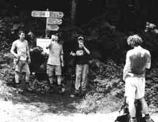
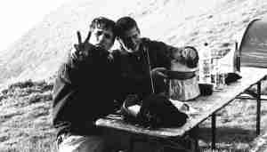
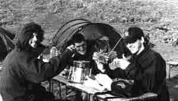
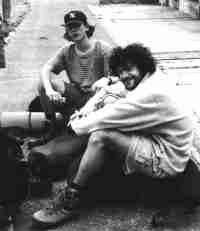
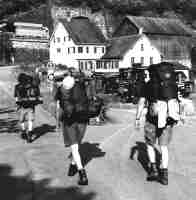
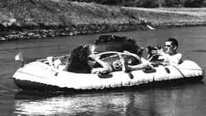
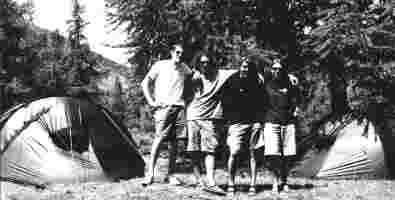
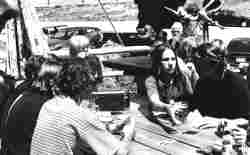

Samstag, 4. Juli
Buchs – Alvier
Nachdem wir alles nötige eingekauft hatten (Lunch, Instant-Spaghetti...)

trafen wir uns am Bahnhof zum Veloverlad. Dank einer volksverblödenden Massnahme der SBB gelang es uns, unsere Velos für 20 statt für 48 Fr. zu verladen (gell Hess). Um 1 Uhr, nachdem wir unsere Rucksäcke samt Zelte gesattelt hatten, stiess Kollege Messner (Fix) bei der Mühle Senn zu uns. Mit vereinten Kräften, hochmotiviert und voller Tatendrang kämpften wir uns unserem Tagesziel entgegen, der Alvierhütte. Nach unserem Halt beim streng geheimen UFO-Sützpunkt Obere Tobelbrücke gings weiter nach Malschüel. Weil sich eine Wolke entschlossen hatte, sich über dem Barbieler Grat auszubreiten, würgten wir unser Gepäck eben im Nebel gen Alvier zu. Pünktlich um 6.00 konnten wir dem Steinmanndli auf dem Gipfel die Hände schütteln. Nach beendetem Zeltaufbau (der übrigens allseits bestaunt wurde) liessen wir uns von unseren Mobil-turbo-Kochern mit Instant-Spaghetti (Coop 5.50) verwöhnen. Den Abend verbrachten wir in geselliger Atmosphäre beim Jassspiel (welches der Schreibende übrigens durch unverhofftes Kartenglück für sich entscheiden konnte). Nach einigen Schlafplatzwahlschwierigkeiten (einige behaupteten, auf dem Alvier habe es riesige Wälder) verkrochen wir uns in unseren gediegenen Zelten und trotzten so den kalten Winden, fanden Schlaf und träumten süss.Gäms
Sonntag, Tag nach dem Samstag, also Sonntag, 5. Juli:
Tag, der ewigen Beinqualen
Wir wurden frühmorgens von einem lauten Fauchgewieher aus dem Schlaf gerissen.

Als wir unsere Köpfe behende aus dem Zelt rekelten, konnten wir rundum ein tiefes Grau erkennen. Nebel war aufgezogen. Nachdem wir mittels GPS herausgefunden hatten, auf welcher Seite die Hütte sich befinden sollte, begaben wir uns tapferen Schrittes dorthin (5 m). Auf diesem Weg bemerkten wir auch, was das Fauchgewieher ausgelöst hatte. Es waren dies nämlich zwei Pferde, die 120 kg (unser Morgenessen) auf den Alvier schleppten.
Das kam uns nicht ungelegen und wir brunchten uns den Magen voll. Das war gut. Mit einem "Hip Hip, AL4" verabschiedeten wir uns von Erika, der Hüttenwartin. Wir kämpften uns durch den Nebel das "Kämi" hinunter, Nachdem wir unsere Kniescheieben bis auf’s Äussere strapaziert hatten, machten wir unsere Mittagsrast in einem Kurhaus bei einem gemütlichen Boccia-Spiel. Nach weiteren quälenden und beinzerreissenden Höhenmeter, die wir auf dem Weg nach Walenstadt vernichteten, begaben wir uns in ein Resti, um unsere Dürste zu stillen. Mit der Bahn in Mühlehorn angekommen (wir haben beschissen), wurden auch gleich die Boote ausgefahren und die Zelte breitgelegt. Marco Mori (Vulgo: Pilz) sah uns dabei aufmerksam zu und lachte sich mit uns den Arsch ab, als Fixe mit dem Segelböötli mitten im See kenterte und nicht mehr vom Fleck kam. Nach diesem strapazenreichen Tag fröhnten wir uns an einem gediegenen Bröötel-Plausch am See. Dabei, lernten, wir, Nachbars, Lumpi, Namens, Guggi, kennen, der, uns, immer, die, schärfsten, Tussis, aufriss. (Kommareicher Satz) (Auch intelligent). Dann müde, Schlafengehen-Zeit, gute Nacht, uns Amen.Sprutz
Montag Tag 3
Logbuch des Captains. Sternzeit 08.00. Verklebte Augen, Hunger, und ein laues Lüftchen sollten unsere Kollegen sein, die uns als erste, am 3. Tag und bisanhin wohl ruhigsten, aus den Federn holten.

Die Beine vertretend und mit dem Gedanken, der Sonne wohltuend Strahlen geniessen zu dürfen, (dies sollte uns noch zum Verhängnis werden), zerlegten wir unsere Zelte, in ihre Einzelteile. Der Aufbruch in Richtung Mühlehorn liess uns trotz (Muskel)-Kater ?!? nicht so schwer, denn in Weesen erwarteten uns ja Gipfeli... Im besagten Dorf angekommen freundeten wir uns mit der Einheimischen Kiosk-Frau an. Ein bisschen später als vereinbart, traf unsere liebe Patrizia mit ihrem immer am Internet sich gütlichtuenden Bruder, ein. Sogleich, und mit tatkräftiger Hilfe von Kindern, pusteten wir unsere Böötli, die für diesen Tag unsere Fortbewegungsmittel waren,
auf und verstauten unsere Rucksäcke in Plastik. Mit viel Elan, Gepäck und einem Loch, dass sich einfach nicht flicken lassen wollte, machten wir uns auf in Richtung Schmerikon. Die Freude stand uns förmlich ins Gesicht geschrieben, einmal nicht unsere Füsse, sondern unseren Bizeps als Mittel zur Fortbewegung zu nutzen. Die Böötli-Fahrt verlief, ausgenommen der Wellenreichen "Schnellä" und einem Luft-in-das-Böötli-blasen-und-Getränke-kaufen-Stop sehr gemütlich und idyllisch. Was nicht heissen soll, die zwei obig erwähnten Besonderheiten, hätten unsereins nicht Freude bereitet (besonders das zweite...). Der kurzen Rede langer Sinn: Vasco da Gamma und Scipio Aemilionus wären auf uns stolz gewesen. In Schmerikon angekommen verwöhnten wir uns mit einem Coup aus Glacé. Überraschenderweise (Meister Ameise), stellte uns der Badi-Häuptling von Schmerikon den Anlegeplatz, mit Wiese, zur Verfügung, auf dem wir unsere super Zelte nun zum 3. Mal aufschlugen. Ein bisschen Fussball und essen, begleiteten uns so in die allabendliche Stille...Schweppes
Dienstag, 7. Juli
Um 8.00 Uhr hiess es aufstehen, die Zelte abbrechen, gediegen zmörgala und allen Abfall zusammensuchen. Damit wir die Badi von Schmerikon so verlassen konnten wie wir sie am Vortag angetroffen hatten. Die Rucksäcke schon wieder in Kehrichtsäcke verpackt, schnallten wir sie gut auf unseren Fahrrädern fest. Los ging es Richtung Ertzel (Schindellegi). Als wir uns den Berg rauf so richtig abstrampeln mussten, kam endlich die verdiente Mittagspause mit Wurst und Brot und zum Dessert Negerküsse, Kaleks musste es wieder einmal übertreiben und ass gleich deren fünf (Schwein). Weiter ging es mit einer rasanten Abfahrt, bis an den Vierwaldstätersee. Den See entlang, immer ein bisschen rauf, ein bisschen runter und plötzlich merkte McFly, dass er einen Platten hat. Den Platten schnell behoben ging es unter strömendem Regen weiter nach Flüelen, wo wir uns dann auch einen Schlafplatz suchten. Dank unserem ständigen Begleiter, dem Glück, fanden wir auch schon bald einen gediegenen Schlafplatz, eine 2 ½ Zimmerwohnung mit Dusche und Trocknungskasten. Sogleich fingen wir unsere nassen Sachen an zu trocknen und uns zu duschen. Der Wohnungsbesitzer lud uns auch noch zum Zmittag am nächsten Tag ein. Danach taten wir uns in einer Beiz beim Brasilien-Holland Fussballspiel gütlich.
Quirl
Mittwoch, 8. Juli
Nach einer gut ausgeschlafenen Nacht (natürlich nicht wie immer im Zelt) schickten wir Eberli los frische Gipfeli zu kaufen. Als dann noch das letzte Gipfeli verschmachtet wurde war es ca 11.00 Uhr. Und wir mussten sofort die Velo beim Bahnhof Flüelen verladen, damit die hungrigen Raider um 12 Uhr zum Macaroni essen erscheinen konnten. Der gut gesinnte Mann kochte und kochte für uns bis die Beine bemerkbar schwerer wurden (Hosen mit grossen Taschen sind immer gut). Als wir dann das nächste Gurtloch eingestellt hatten bedankten wir uns mit einer Flasche Wein für die Unterkunft und das gute Essen. In zwei Gruppen aufgeteilt versuchten wir unser Glück per Anhalter auf Andermatt zu kommen. Unterwegs erkundet man sich über Sackmesser, Benzinlampen und Militärhosen. Der zweite Autofahrer war zum Glück ein Gleichgesinnter und fuhr uns mit 140 km/h die Strasse nach Andermatt empor. Weil der Fahrer die Strasse sonst als Strecken zum Rennenfahren benutzt hatten wir beste Bodenhaftung und durften die Verkehrsinseln sogar links herum befahren. Kreidenweiss in Andermatt angekommen trafen wir sogleich die zweite Gruppe am Bahnhof. Und was jetzt? Wir brauchen ein Dach über dem Kopf. Sämtlich Hotels abgeklappert kamen wir auf das Ergebnis, das wir immer noch kein Dach haben uns das es Leute gibt mit unterschiedlichem Temperament. Dann kam zum Glück der Andi mit der Nachricht wir können in einer 4 ½ Zimmer Ferienwohnung schlafen. Ich weiss nicht wie er das immer schafft aber das spielt jetzt keine Rolle. Sofort stürmten wir in den Coop und deckten uns mit dem nötigen Essen für ein feines Essen und gedigenen Fernsehabend ein. Nach den feinen Fischstäbchen mit Ofenfrits schauten wir den alten Klassiker "das Boot". Natürlich bleib es nicht nur bei diesem Film, wenn mit schon mal einen Fernseher zur Verfügung hat muss man sich die Augen voll glotzen. Um 2 Uhr gingen wir dann in das bequeme Bett schlafen und wachten dann wieder auf weil Sandro eingeschlafen ist. Schnarch, Schnarch.
Knorrli
Donnerstag, 9. Juli
Heute war ausschlafen angesagt: wie üblich standen wir um acht Uhr auf (wir hatten dafür tiefer gepennt). Als auch Kaleks und Quirl aus ihrem Liebesnest entstiegen waren, brunchten wir uns Spiegeleier mit Speck. Frisch verpflegt machten wir uns (nachdem wir die Wohnung gesäubert hatten) auf zum stöppeln. Mir und McFly war das Glück als erstes hold. Ein Vermesser fuhr uns bis nach Realp. Von hier aus versuchten wir erneut unser Glück. Doch siehe da: auch unsere Artgenossen fanden eine Mitfahrgelegenheit bis nach Realp. So kam es, dass Kaleks, Quirl und Schweppes wohl oder übel im Restaurant platz nehmen mussten während wir, vergnügt vor uns hersingend, den Daumen am Strassenrand lüfteten. Schliesslich erbarmte sich der Kerl vom Hotel Sternen unser und nahm uns mit bis zum Bergresti. Nach einem offerierten aber selbst bezahlten Kaffe versuchten wir unser Glück erneut. Eine Frau (inkl. Kind) nahm uns nachdem die Anderen uns in einem Betonmischer überholt hatten, mit. Kaum angefahren, sahen wir 3 Leute in Uniform (eigentlich sahen wir nur 2 weil...) am stöppeln. Natürlich waren es die unseren! Als wir schliesslich allesamt im Oberwald angekommen waren, sattelten wir unsere Drahtesel und machten uns auf den Weg Richtung Brig. Le kaleks brillierte unterwegs mit seiner Gas-Pump-Patronen, nachdem sein Reifen platzte und geflickt worden ist. Schlussendlich trafen wir alle glücklich in Brig ein und machten uns auf die Suche nach einem Zeltplatz. Weil der Offizielle uns zu teuer war machte nach intensiver Suche das Migors-Dach das Rennen. Nach einer grosszügigen Portion Tomaten-Risotto (Schwarz frisst die ganze Pfanne leer... denkste!) machten wir Brig unsicher. Wir tranken Getränke und bewerteten Frauen während sich McFly mit einem ganzen Damenchörli vergnügte. Besagtes Damenchörli offerierte uns einen Schlafplatz für Morgen was wir natürlich dankend annahmen (auf dem Migros-Dach beginnt es pünktlich um 8.00 zu regnen, Sprenkler sei dank.) Voller Vorfreude auf die Massaschlucht legten wir uns um 1.00 in unsere Penntüten.
Gäms
Freitag, 10. Juli
Wie besagt sprang morgens um 7.30 Uhr (nicht um 8.00 Uhr) die Sprenkleranlage an. Per Zufall aber nur dort, wo wir unsere Zelte nicht aufgestellt hatten. (Wir haben eben immer Schwein). Noch halb schlafend wandelten wir Richtung Bushaltestelle, wo uns das Dü-Da-Do-Auto nach Blatten transportierte. Da wir uns nicht gerade erfreuen konnten, einen Kaffee zu kochen, begnügten wir uns mit einem Kaffee vom Restaurant. Dann endlich um 9.00 Uhr ging es los: "Das Massa-Schlucht-Spektakel"! Zu bemerken ist, dass wir den Helm mehr auf der Hinfahrt mit dem Auto, als in der Schlucht selbst gebraucht haben. In der Schlucht selbst durften wir uns nach einem längeren Einlaufen an ersten kleineren Sprüngen erfreuen. Fast in die Hose gemacht haben wir uns dann erst beim 8 Meter-Sprung. (Die Sensation in der Schlucht). Dabei gab meine Wegwerfkamera spätestens endgültig den Geist auf. Im Grossen und Ganzen war die Massa optisch sehr eindrücklich und unser Bergführer (Martin) ein flotter Kerli. (Danach: Beiz) Nachdem dann Martin die Zech prellte und wir den Tag und die Tat langsam verdaut hatten, begaben wir uns wieder nach Brig in unser Lieblingseinkaufshaus, wo noch unsere Stahlrösser warteten. Nach einem so speziellen Tag gönnten wir uns auch ein spezielles Nachtessen: es gab belle cuisine: Ravioli al’Italiana, mit exquisitem M-Budget Reibkäse und dazu ein wunderbar gesottenes Schweizer Landei für jeden Mitessenden. (Das war lecker). Nun mussten wir uns aber schleunigst auf die Socken machen, denn unser Sängerin-Chörli-Brig-Fräulein erwartete uns schon sehnsüchtigst auf ihrem Anwesen, wo wir unsere Zelte im schönsten Landstreifen platzierten. Danach dürstete es uns so sehr (bei McFly war dies mehr der Liebesdurst), dass wir uns schleunigst ins Briger Nachtleben stürzen mussten. Als wir uns dann um ca. 1.00 Uhr halb tot gefeiert hatten machten wir uns wieder auf den Heimweg. Auf einmal hööpüntelte es auf der Strasse, die Rover waren aufgetaucht. Nun mussten wir eben nochmals ins Nachtleben stürzen. Aber auch das 118 Pub hatte nur noch bis 2.00 Uhr offen. Dann war endgültig Feierabend. Wir gingen richtung Zelt und schliefen uns die Ohren voll.
Sprutz
Samstag, 11. Juli
Also eigentlich begann dieser Tag ungefähr schon um 2 Uhr. Wie im letzten Bericht geschrieben, trafen wir unverhofft auf unsere Rover, die uns sogleich zu einem 2. Besuch im 118 animierten...
Das Aufstehen war eine Qual. Schweissgebadet überwindete man sich trotzdem, den Tageslauf in Angriff zu nehmen. Das Velo zum drittenmal besattelt, und den z’Morgen im Magen liegend, radelten wir in richtung Visp. Da auch in Visp die SBB

Angestellten nicht gerade die Hellsten sind, gab es beim Veloverlad wieder einmal keine Probleme. Wir hüpften in das Gelbe Auto, das uns nach Moosalp brachte. Die Fahrt dauerte ca. 10h!!!! (gäll Gäba) Das bis anhin schönste Wetter hiess uns im Lager der Pfädis willkommen. Voller Grimm stellten wir aber fest, dass trotz unserer Anmeldung zum z’Mittag kein Schwein etwas davon wusste. Wir wussten uns aber zu helfen, und ergötzten uns am Racclet-Schmaus des Moosalp-Beizers. Nach einer Weile trafen auch die am Vorabend angetroffenen Rover auf dem Lagerplatz ein. Sogleich setzte man sich zusammen und diskutierte über die wichtigsten Sachen (?!?). Das Tannenzapfen etwas lustiges sein können, hat Eibi spätestens auf der Moosalp erfahren. Die einen mit Schlafen, die anderen auch, sehnten dem Abend mit Vorfreude entgegen. Während nämlich die Pfädis ihr traditionelles Lagergericht abhielten, vergnügten wir uns Rover in der nahegelegenen, schon öfters erwähnten Beiz. Nach etlichen Lachanfällen gewann die Müdigkeit bei einigen die Oberhand, während die anderen sich bei Gesang + Alphornblasen vergnügten.Schweppes
Sonntag 12. Juli
Den Tag begannen wir einmal mit ausschlafen. Als wir aufstanden, hatten sich schon einige Eltern auf dem Lagergelände eingefunden. Den Rest des Tages verbrachten wir

mit faulenzen und blöd schwätzen. Weil uns Nicole das Auto nicht geben wollte mussten wir schon um 17.30 Uhr das Lagergelände mit Sack und Pack verlassen. Als ein kleines Trostpflaster bekamen wir noch einen Schokoladenkuchen. In Stalden angekommen stellten wir unser Gepäck im Bahnhof unter und nahmen den Schlafsack und das Mätteli mit in den Ausgang. Den EC-Automaten geplündert ging es los in das nächste Restaurant, wo am Abend auch noch das WM-Finale lief. Nachdem wir ausgiebig gefeiert haten, weil Eibi und McFly beim Dartspielen eine Schnapszahl geschossen hatten und Frankreich verdient gegen Brasilien gewonnen hatte, gingen wir in Nachbarsgarten schlafen.Quirl
Montag, 13. Juli
Saas Fee
Ich wache auf weil mich etwas im Gesicht kitzelt. Scheisse, Ameisen!! Wie spät ist es 7.15 gerade richtig zum Aufstehen. Ich wecke die Anderen die noch von dem Supermatch Brasilien – Frankreich träumen auf. Sie sind natürlich auch voll mit Ameisen, vor allem Sandro’s Ohren. Die Ameisen haben sicher probiert ins Sandros Gehirn einzukriechen um das Schnarchen abzuklemmen, glaube ich jedenfalls. Ja, ja was wäre der Mensch ohne die Natur. Nach dem wir unsere Schlafsäcke zusammen gerollt haben und die Ameisen getötet haben, bewegten wir unsere 6 Ärsche zum Postauto dass richtung Saas Fee fährt. Vollgepackt mit Snowboard, Steigeisen und Schneegeilheit fährt uns Meister Proper (Postautochaufeur der keine Haare hat) zum Japanertreff Nummer 1. In der Unterirdischen Atombombensicheren Postautohaltestelle brauchten wir nur 8 Minuten für das Gepäck von uns das für 50 Leute gelangt hätte zu verstauen. Mit den wintertauglichen Kleidern und dem Snowboard in der Hand begaben wir uns zu der Seilbahnstation. Kaum eingestiegen schon doben Swiss Metro sei dank erblickten wir eine riesige Gletscherwelt und viele Leute die mit Fotoapparaten bewaffnet sind. Mit dem Snowboard unter den Füssen wagten wir die erste Abfahrt über die schneebekleideten Hängen. Wir geniessten das Snowboarden in vollen Zügen bis der Lift abstellte. Nach dem freudigen Schneeplausch begaben wir uns zu der Britannia Hütte die für uns ein Bett reserviert hatte. Um die Zeit bis hin zum Gutnacht Männchen zu verkürzen spielten wir sämtliche Jasssorten durch vor allem Schellenjass. Weil ich das Spiel gewinnen wollte gab ich voll Gas das hatte negative Auswirkungen auf meine Punktzahl so kam es das ich mit den meisten Punkten das Spiel verlor. Nach der munteren Jassrunde hiess es ins Bett zu gehen und die Augen zu schliessen und den Arschabzuschlaffen.
Knorrli